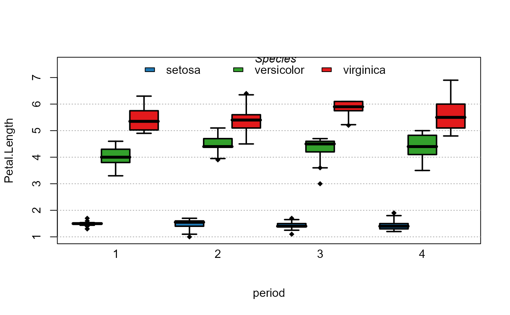

plot_box.RdThis function allows to draw a boxplot, with possibly separating different moderators.
plot_box(
fml,
data,
case,
moderator,
inCol,
outCol = "black",
density = -1,
lty = 1,
pch = 18,
addLegend = TRUE,
legend_options = list(),
lwd = 2,
outlier,
dict = NULL,
dict_case,
dict_moderator,
order_case,
order_moderator,
addMean,
mean.col = "darkred",
mean.pch = 18,
mean.cex = 2,
mod.title = TRUE,
labels.tilted,
trunc = 20,
trunc.method = "auto",
line.max,
...
)A numeric vector or a formula of the type: vars ~ moderator_1 | moderator_2. Note that if a formula is provided then the argument ‘data’ must be provided. You can plot several variables, if you don't want a moderator, use 1 instead: e.g. plot_box(Petal.Width +Petal.Length ~ 1, iris). You can plot all numeric variables from a data set using ".": plot_box(. ~ 1, iris).
A data.frame/data.table containing the relevant information.
When argument fml is a vector, this argument can receive a vector of cases.
When argument fml is a vector, this argument can receive a vector of moderators.
A vector of colors that will be used for within the boxes.
The color of the outer box. Default is black.
The density of lines within the boxes. By default it is equal to -1, which means the boxes are filled with color.
The type of lines for the border of the boxes. Default is 1 (solid line).
The patch of the outliers. Default is 18.
Default is TRUE. Should a legend be added at the top of the graph is there is more than one moderator?
A list. Other options to be passed to legend which concerns the legend for the moderator.
The width of the lines making the boxes. Default is 2.
Default is TRUE. Should the outliers be displayed?
A dictionnary to rename the variables names in the axes and legend. Should be a named vector. By default it s the value of getFplot_dict(), which you can set with the function setFplot_dict.
A named character vector. If provided, it changes the values of the variable ‘case’ to the ones contained in the vector dict_case. Example: I want to change my variable named "a" to "Australia" and "b" to "Brazil", then I used dict=c(a="Australia",b="Brazil").
A named character vector. If provided, it changes the values of the variable ‘moderator’ to the ones contained in the vector dict_moderator. Example: I want to change my variable named "a" to "Australia" and "b" to "Brazil", then I used dict=c(a="Australia",b="Brazil").
Character vector. This element is used if the user wants the ‘case’ values to be ordered in a certain way. This should be a regular expression (see regex help for more info). There can be more than one regular expression. The variables satisfying the first regular expression will be placed first, then the order follows the sequence of regular expressions.
Character vector. This element is used if the user wants the ‘moderator’ values to be ordered in a certain way. This should be a regular expression (see regex help for more info). There can be more than one regular expression. The variables satisfying the first regular expression will be placed first, then the order follows the sequence of regular expressions.
Whether to add the average for each boxplot. Default is true.
The color of the mean. Default is darkred.
The patch of the mean, default is 18.
The cex of the mean, default is 2.
Character scalar. The title of the legend in case there is a moderator. You can set it to TRUE (the default) to display the moderator name. To display no title, set it to NULL or FALSE.
Whether there should be tilted labels. Default is FALSE except when the data is split by moderators (see mod.method).
If the main variable is a character, its values are truncaded to trunc characters. Default is 20. You can set the truncation method with the argument trunc.method.
If the elements of the x-axis need to be truncated, this is the truncation method. It can be "auto", "right" or "mid".
Option for the x-axis, how far should the labels go. Default is 1 for normal labels, 2 for tilted labels.
Other parameters to be passed to plot.
Invisibly returns the coordinates of the x-axis.
# Simple iris boxplot
plot(1:10)
# All numeric variables
plot_box(. ~ 1, iris)
# All numeric variable / splitting by species
plot_box(. ~ Species, iris)
# idem but with renaming
plot_box(. ~ Species, iris, dict = c(Species="Iris species",
setosa="SETOSA", Petal.Width="Width (Petal)"))
# Now using two moderators
base = iris
base$period = sample(1:4, 150, TRUE)
plot_box(Petal.Length ~ period | Species, base)
